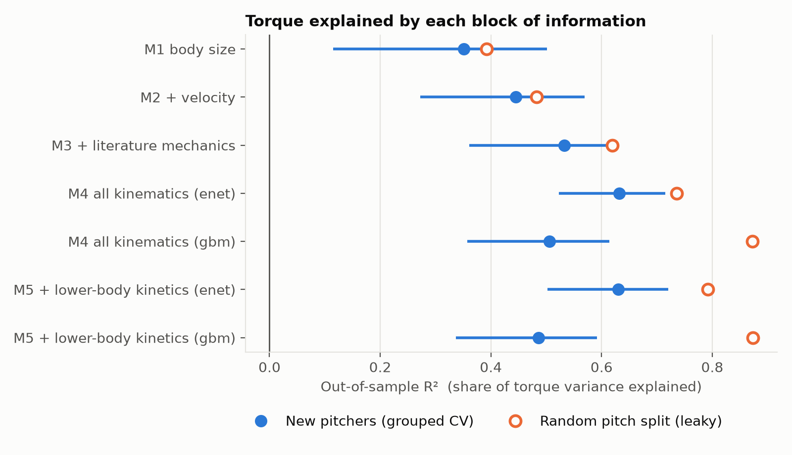
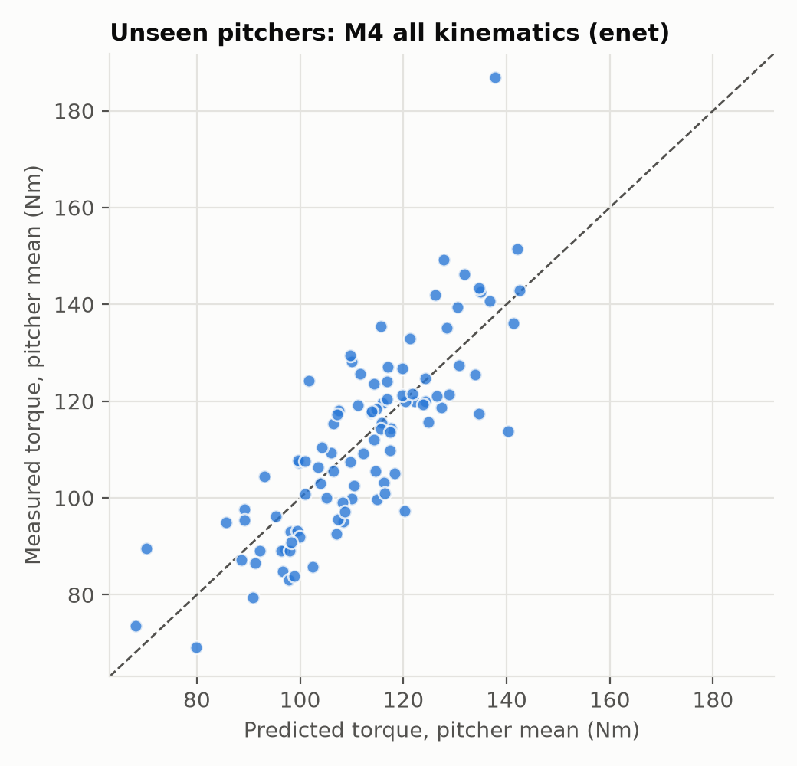
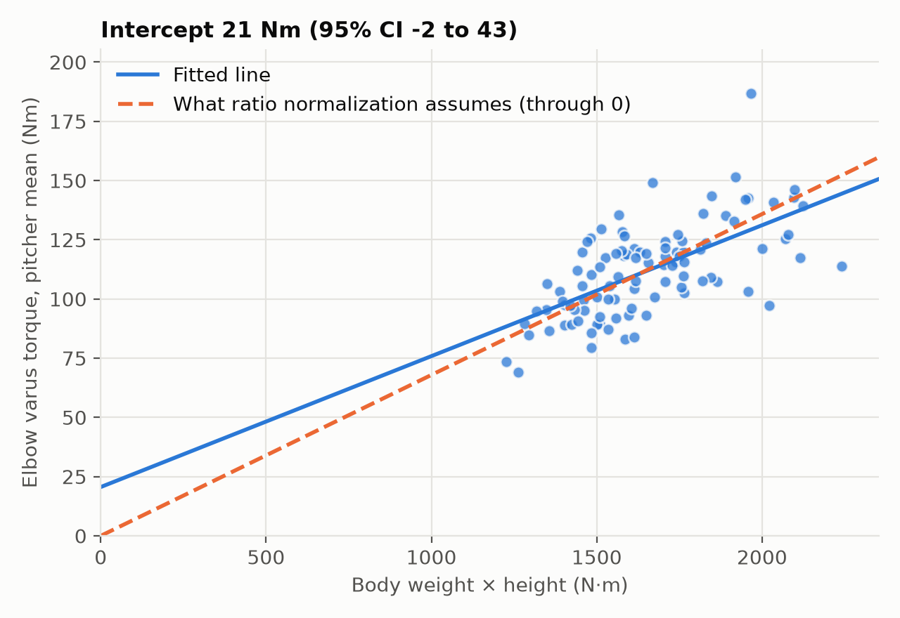
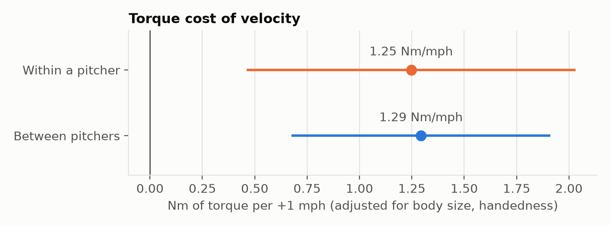

How much of a pitcher's elbow load can be predicted from body size, velocity and mechanics, and how much does leaky validation overstate it?
411 fastballs from 100 pitchers in the OpenBiomechanics Project (Driveline Baseball): marker-based motion capture (360 Hz) and force plates, processed by inverse dynamics. The pitchers are mostly college level, with one session each. The outcome is peak elbow varus torque (Nm).

Out-of-sample R² for each information block. Filled: validated on held-out pitchers, with 95% CI. Hollow: the same model under a random pitch split.
| Model | R² | 95% CI | RMSE (Nm) | R², leaky split |
|---|---|---|---|---|
| Body size + handedness | 0.35 | 0.12–0.50 | 16.0 | 0.39 |
| + velocity | 0.45 | 0.27–0.57 | 14.8 | 0.48 |
| + 10 literature mechanics | 0.53 | 0.36–0.63 | 13.6 | 0.62 |
| All kinematics, elastic net | 0.63 | 0.52–0.72 | 12.0 | 0.74 |
| All kinematics, boosted trees | 0.51 | 0.36–0.61 | 14.0 | 0.87 |
| + lower-body kinetics, elastic net | 0.63 | 0.50–0.72 | 12.1 | 0.79 |
R² and RMSE: averages over 20 repeats of 10-fold CV grouped by pitcher. CIs: pitcher bootstrap (2,000 resamples) of the first repeat.

Pitcher-mean torque against the prediction for pitchers held out of training.

Ratio normalization assumes a line through zero. The intercept CI (−2 to 43 Nm) includes zero, so normalization is defensible here.

The sample is 100 mostly college pitchers tested in one lab, throwing fastballs, so results may not transfer to MLB or in-game settings. Torque is an inverse-dynamics estimate whose level scales with body mass by construction. With 100 pitchers, the intervals for R² gains span about ±0.1, so smaller differences are not findings.
Data: The OpenBiomechanics Project, Driveline Baseball (CC BY-NC-SA 4.0). This is a derived work under the same license and is not affiliated with or endorsed by Driveline.